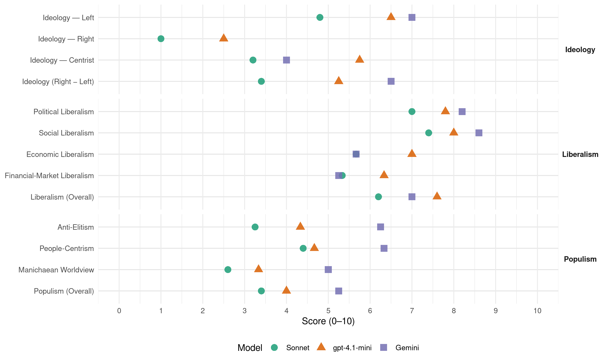

PAC (Costa Rica, 2010)
manifesto_id 153331_201002
Get full text: This site shows derived annotations and short verbatim quotes only. The full manifesto text is © Manifesto Project / WZB — obtain it via manifesto-project.wzb.eu using the manifesto_id above.
Headline scores
| Dimension | Sonnet | gpt-4.1-mini | Gemini |
|---|---|---|---|
| Populism (Overall) | 3.4 | 4.0 | 5.2 |
| Anti-Elitism | 3.2 | 4.3 | 6.2 |
| People-Centrism | 4.4 | 4.7 | 6.3 |
| Manichaean Worldview | 2.6 | 3.3 | 5.0 |
| Ideology (Right − Left) | 3.4 | 5.2 | 6.5 |
| Liberalism (Overall) | 6.2 | 7.6 | 7.0 |
| Political Liberalism | 7.0 | 7.8 | 8.2 |
| Social Liberalism | 7.4 | 8.0 | 8.6 |
| Economic Liberalism | 5.7 | 7.0 | 5.7 |
| Financial-Market Liberalism | 5.3 | 6.3 | 5.2 |
Evidence per dimension
Economic Liberalism
Gemini · score 6.0 · verified · chunk 1
“apoyar la labor del empresariado en el crecimiento”
personas trabajadores, reconocer y apoyar la labor del empresariado en el crecimiento, impulsar la capacidad emprendedora
Gemini · score 5.0 · mixed · chunk 2
“competencia y contratación de empresas privadas honestas”
desarrollar las obras será indispensable la competencia y contratación de empresas privadas honestas con contratos adecuadamente estructurados
Gemini · score 6.0 · mixed · chunk 3
“protagonismo del sector privado en”
potenciar las capacidades técnicas y políticas del Estado que contribuyan conjuntamente con el protagonismo del sector privado en la generación de más actividad productiva
Gemini · score 4.0 · verified · chunk 4
“Incentivo a las empresas privadas”
Incentivo a las empresas privadas que promuevan el deporte entre sus trabajadores.
Gemini · score 7.0 · verified · chunk 5
“apoyo en materia de emprendedurismo”
existente, o hacer una reconversión… Apoyo especial en materia de emprendedurismo para el desarrollo de su idea
gpt-4.1-mini · score 7.0 · verified · chunk 1
“apoyar la labor del empresariado en el crecimiento, impulsar la capacidad emprendedora de la juventud”
Es también respetar los derechos de las personas trabajadores, reconocer y apoyar la labor del empresariado en el crecimiento, impulsar la capacidad emprendedora de la juventud en la creación de empresas, garantizar la transparencia y ética de la función pública, respetar las leyes y abrir los espacios necesarios para la construcción de la Costa Rica que queremos por medio del diálogo.
gpt-4.1-mini · score 7.0 · verified · chunk 2
“mercado, competencia, empresa, impuestos, comercio, regulación, privatización”
La política económica en general estará orientada a garantizar la estabilidad de los macroprecios (tasas de interés, tipo de cambio y tasa de salario), requisito sin el cual no se puede crecer sólidamente y con equidad de oportunidades para todos en el mediano y largo plazo.
gpt-4.1-mini · score 7.0 · verified · chunk 3
“libre comercio, competitividad, inversión, empleo”
Para que Costa Rica se inserte exitosamente en la economía global requiere de un programa proactivo de competitividad, siguiendo el ejemplo de todo país exitoso, desde Estados Unidos hasta la República de Corea. En primer lugar, es necesario mejorar sustancialmente la calidad del capital humano, lo cual se logra con un mejoramiento significativo en la calidad de la educación pública en todos sus niveles.
gpt-4.1-mini · score 7.0 · verified · chunk 4
“mejora en el sistema de asignación de recursos basado en costo-eficiencia”
Mejora en el sistema de asignación de recursos basado en costo-eficiencia, que promueve el logro de resultados y la equidad en la provisión de servicios.
gpt-4.1-mini · score 7.0 · verified · chunk 5
“Creación de un departamento en los bancos que conforman la Banca de Desarrollo para atender las necesidades de apoyo de las mujeres”
Financiamiento a las mujeres microempresarias Creación de un departamento en los bancos que conforman la Banca de Desarrollo para atender las necesidades de apoyo de las mujeres que desean obtener un préstamo, ya sea para iniciar una micro o pequeña empresa, expandir las capacidades de la ya existente, o hacer una reconversión para responder a nuevos nichos de mercado.
Sonnet · score 6.0 · verified · chunk 1
“sistema de economía mixta donde prosperen y coexistan”
Un país con un sistema de economía mixta donde prosperen y coexistan varias formas de propiedad y se fecunden recíprocamente los distintos sectores (privado, público y asociativo)
Sonnet · score 5.0 · mixed · chunk 2
“competencia en todos los niveles del sistema financiero”
se buscará fomentar la competencia en todos los niveles del sistema financiero de forma que se incremente la eficiencia económica
Sonnet · score 6.0 · mixed · chunk 3
“apertura de nuevos mercados internacionales”
El Partido Acción Ciudadana promoverá la apertura de nuevos mercados internacionales para nuestra producción, por medio de negociaciones tanto dentro de la OMC como por tratados de libre comercio
Sonnet · score 5.0 · verified · chunk 4
“sana competencia entre los establecimientos y servicios”
Montaje de un sistema de asignación de recursos que privilegie el trabajo en red y la sana competencia entre los establecimientos y servicios, con énfasis en las prioridades establecidas
Sonnet · score 6.0 · verified · chunk 5
“créditos preferenciales para los programas de incubación”
Creación y fortalecimiento de créditos preferenciales para los programas de incubación de empresas y de jóvenes emprendedores.
Financial-Market Liberalism
Gemini · score 5.0 · verified · chunk 1
“fomenten las diversas formas del capital”
asociativo), se fomenten las diversas formas del capital (público y privado), cada una con
Gemini · score 4.0 · verified · chunk 2
“fomentar la competencia en todos los niveles del sistema financiero”
pequeñas y medianas empresas (PyMES)… Asimismo, se buscará fomentar la competencia en todos los niveles del sistema financiero de forma que se incremente
Gemini · score 4.0 · mixed · chunk 3
“acceso al crédito, servicios de”
Las pequeñas y medianas empresas enfrentan serias limitaciones para su desarrollo en materia de acceso al crédito, servicios de apoyo y apertura de nuevos mercados.
Gemini · score 5.0 · verified · chunk 4
“bancos que conforman la Banca de Desarrollo”
Creación de un departamento en los bancos que conforman la Banca de Desarrollo para atender
Gemini · score 7.0 · verified · chunk 5
“obtener un préstamo, ya sea para iniciar”
apoyo de las mujeres que desean obtener un préstamo, ya sea para iniciar una micro o pequeña empresa
gpt-4.1-mini · score 6.0 · verified · chunk 1
“transparencia y ética de la función pública, respetar las leyes y abrir los espacios necesarios”
Es también respetar los derechos de las personas trabajadores, reconocer y apoyar la labor del empresariado en el crecimiento, impulsar la capacidad emprendedora de la juventud en la creación de empresas, garantizar la transparencia y ética de la función pública, respetar las leyes y abrir los espacios necesarios para la construcción de la Costa Rica que queremos por medio del diálogo.
gpt-4.1-mini · score 6.0 · verified · chunk 2
“sistema financiero, crédito, ahorro, inversión, fondos, mercado financiero”
Se propiciará un orden económico y social que incluya en su misma racionalidad la conservación y la sustentabilidad del medio ambiente, de la biodiversidad y de los ecosistemas, base natural de toda la vida humana.
gpt-4.1-mini · score 7.0 · verified · chunk 3
“banca estatal juegue un papel fundamental en la reducción del margen de intermediación financiera”
Diseño de mecanismos para que la banca estatal juegue un papel fundamental en la reducción del margen de intermediación financiera. Orientaciones para que los fondos de pensiones y de inversión se destinen a la financiación de buenos proyectos de inversión en el país y se utilicen como un esquema alternativo para el financiamiento de la infraestructura pública.
Sonnet · score 5.0 · verified · chunk 1
“fomento del crédito y el microcrédito”
Promoción de la economía social a través del fomento del crédito y el microcrédito, la asistencia técnica y la promoción de las diferentes formas económicas asociativas
Sonnet · score 4.0 · mixed · chunk 2
“condiciones oligopólicas persistentes en el mercado financiero nacional”
El Partido Acción Ciudadana propiciará acciones que gradualmente vayan rompiendo las condiciones oligopólicas persistentes en el mercado financiero nacional
Sonnet · score 5.0 · mixed · chunk 3
“costo del crédito sumamente elevado”
esto se ve negativamente impactado por un costo del crédito sumamente elevado comparativamente con estándares internacionales
Sonnet · score 5.0 · verified · chunk 4
“Impulso a programas crediticios para financiar iniciativas”
Impulso a programas crediticios para financiar iniciativas de desarrollo de los pueblos indígenas.
Sonnet · score 6.0 · verified · chunk 5
“bancos que conforman la Banca de Desarrollo”
Creación de un departamento en los bancos que conforman la Banca de Desarrollo para atender las necesidades de apoyo de las mujeres
Political Liberalism
Gemini · score 9.0 · verified · chunk 1
“garantice la efectiva división de poderes”
integran la sociedad costarricense, que garantice la efectiva división de poderes y la transparencia en todos los procesos
Gemini · score 8.0 · verified · chunk 2
“mejoramiento de la eficiencia, eficacia y rendición de cuentas”
superar el rezago. PROPUESTAS Mejoramiento de la eficiencia, eficacia y rendición de cuentas de las municipalidades e instituciones
Gemini · score 8.0 · verified · chunk 3
“transparencia, la rendición de cuentas”
evaluación participativa de los programas y el control ciudadano, se mejorará la transparencia, la rendición de cuentas, la eficiencia y la eficacia
Gemini · score 8.0 · verified · chunk 4
“fortalecimiento de la institucionalidad democrática”
El fortalecimiento de la institucionalidad democrática y el Estado Social de Derecho.
Gemini · score 8.0 · verified · chunk 5
“logro de una democracia paritaria”
política de las mujeres y al logro de una democracia paritaria y fortalecimiento de la institucionalidad
gpt-4.1-mini · score 8.0 · verified · chunk 1
“garantice la efectiva división de poderes y la transparencia en todos los procesos de participación democrática”
Un país con un sistema político que potencie la participación de los diversos sectores que integran la sociedad costarricense, que garantice la efectiva división de poderes y la transparencia en todos los procesos de participación democrática.
gpt-4.1-mini · score 7.0 · verified · chunk 2
“democracia, derechos, elecciones, cortes, medios, gobierno, parlamento”
A efecto de lograr esos objetivos revisaremos los reglamentos necesarios para eliminar excesos en relación con lo exigido por el Tratado de Libre Comercio aprobado en el pasado referéndum, manteniendo el cuidado necesario para no violentar los acuerdos comerciales, pero entendiendo que este representa un máximo y no un mínimo de compromisos para el país.
gpt-4.1-mini · score 8.0 · verified · chunk 3
“democracia, derechos, elecciones, cortes, medios”
El desarrollo humano pretende fortalecer las capacidades de las personas, ampliar sus opciones en la vida, es decir, ampliar su libertad. Busca cumplir con los derechos humanos, asegurar la inclusividad democrática y disminuir los extremos de la desigualdad. En este contexto, la pobreza es entendida como la negación a las personas de oportunidades y capacidades para llevar una vida digna.
gpt-4.1-mini · score 8.0 · verified · chunk 4
“fortalecimiento de la institucionalidad democrática y el Estado Social de Derecho”
El cumplimiento de los preceptos de justicia pronta y cumplida. El fortalecimiento de la institucionalidad democrática y el Estado Social de Derecho.
gpt-4.1-mini · score 8.0 · verified · chunk 5
“ARTÍCULO 33.- Toda persona es igual ante la ley y no podrá practicarse discriminación alguna”
Si bien existen una serie de normativas desde nuestra Constitución Política en su “ARTÍCULO 33.- Toda persona es igual ante la ley y no podrá practicarse discriminación alguna contraria a la dignidad humana”; nuestra legislación penaliza la discriminación por orientación sexual, Ley General sobre VIH-SIDA, ARTÍCULO 48.- “Discriminación.
Sonnet · score 8.0 · verified · chunk 1
“garantice la efectiva división de poderes”
Un país con un sistema político que potencie la participación de los diversos sectores que integran la sociedad costarricense, que garantice la efectiva división de poderes y la transparencia en todos los procesos de participación democrática
Sonnet · score 6.0 · verified · chunk 2
“transparencia, la rendición de cuentas, la eficiencia”
se mejorará la transparencia, la rendición de cuentas, la eficiencia y la eficacia en el uso de los fondos públicos
Sonnet · score 7.0 · verified · chunk 3
“transparencia, la rendición de cuentas”
se mejorará la transparencia, la rendición de cuentas, la eficiencia y la eficacia en el uso de los fondos públicos
Sonnet · score 7.0 · verified · chunk 4
“fortalecimiento de la institucionalidad democrática y el Estado Social de Derecho”
10. El fortalecimiento de la institucionalidad democrática y el Estado Social de Derecho. 11. El resguardo a la defensa de la integridad personal y seguridad por razones de género.
Sonnet · score 7.0 · verified · chunk 5
“democracia paritaria y fortalecimiento de la institucionalidad”
fortalecimiento de la participación política de las mujeres y al logro de una democracia paritaria y fortalecimiento de la institucionalidad
Liberalism (Overall)
Gemini · score 7.0 · verified · chunk 1
“garantice la efectiva división de poderes”
integran la sociedad costarricense, que garantice la efectiva división de poderes y la transparencia en todos los procesos
Gemini · score 6.0 · verified · chunk 2
“mejoramiento de la eficiencia, eficacia y rendición de cuentas”
superar el rezago. PROPUESTAS Mejoramiento de la eficiencia, eficacia y rendición de cuentas de las municipalidades e instituciones
Gemini · score 7.0 · verified · chunk 3
“transparencia, la rendición de cuentas”
evaluación participativa de los programas y el control ciudadano, se mejorará la transparencia, la rendición de cuentas, la eficiencia y la eficacia
Gemini · score 7.0 · verified · chunk 4
“fortalecimiento de la institucionalidad democrática”
El fortalecimiento de la institucionalidad democrática y el Estado Social de Derecho.
Gemini · score 8.0 · verified · chunk 5
“reconocemos los derechos humanos de las minorías”
En Acción Ciudadana reconocemos los derechos humanos de las minorías por orientación sexual y repudiamos cualquier
gpt-4.1-mini · score 7.0 · verified · chunk 1
“garantice la efectiva división de poderes y la transparencia en todos los procesos de participación democrática”
Un país con un sistema político que potencie la participación de los diversos sectores que integran la sociedad costarricense, que garantice la efectiva división de poderes y la transparencia en todos los procesos de participación democrática.
gpt-4.1-mini · score 7.0 · verified · chunk 2
“política económica en general estará orientada a garantizar la estabilidad”
La política económica en general estará orientada a garantizar la estabilidad de los macroprecios (tasas de interés, tipo de cambio y tasa de salario), requisito sin el cual no se puede crecer sólidamente y con equidad de oportunidades para todos en el mediano y largo plazo.
gpt-4.1-mini · score 8.0 · verified · chunk 3
“libre comercio, competitividad, inversión, empleo”
Para que Costa Rica se inserte exitosamente en la economía global requiere de un programa proactivo de competitividad, siguiendo el ejemplo de todo país exitoso, desde Estados Unidos hasta la República de Corea. En primer lugar, es necesario mejorar sustancialmente la calidad del capital humano, lo cual se logra con un mejoramiento significativo en la calidad de la educación pública en todos sus niveles.
gpt-4.1-mini · score 8.0 · verified · chunk 4
“fortalecimiento de la institucionalidad democrática y el Estado Social de Derecho”
El cumplimiento de los preceptos de justicia pronta y cumplida. El fortalecimiento de la institucionalidad democrática y el Estado Social de Derecho.
gpt-4.1-mini · score 8.0 · verified · chunk 5
“ARTÍCULO 33.- Toda persona es igual ante la ley y no podrá practicarse discriminación alguna”
Si bien existen una serie de normativas desde nuestra Constitución Política en su “ARTÍCULO 33.- Toda persona es igual ante la ley y no podrá practicarse discriminación alguna contraria a la dignidad humana”; nuestra legislación penaliza la discriminación por orientación sexual, Ley General sobre VIH-SIDA, ARTÍCULO 48.- “Discriminación.
Sonnet · score 7.0 · verified · chunk 1
“respeto a un Estado de Derecho como garantía”
respeto a un Estado de Derecho como garantía para una convivencia pacífica, digna y democrática, compromiso activo con los Convenios Internacionales en materia de derechos humanos
Sonnet · score 5.0 · verified · chunk 2
“autonomía de este órgano con relación a las pretensiones fiscalistas”
garantizando la autonomía de este órgano con relación a las pretensiones fiscalistas del Poder Ejecutivo y de los grupos económicos de presión
Sonnet · score 6.0 · verified · chunk 3
“transparencia, la rendición de cuentas”
se mejorará la transparencia, la rendición de cuentas, la eficiencia y la eficacia en el uso de los fondos públicos
Sonnet · score 6.0 · verified · chunk 4
“ninguna persona tenga desventajas porque es mujer o porque tiene una orientación sexual”
Acción Ciudadana aspira a una sociedad en la cual ninguna persona tenga desventajas porque es mujer o porque tiene una orientación sexual, un color de piel o una religión diferente a la de la mayoría.
Sonnet · score 7.0 · verified · chunk 5
“derechos humanos de las minorías por orientación sexual”
en Acción Ciudadana reconocemos los derechos humanos de las minorías por orientación sexual y repudiamos cualquier discriminación
Anti-Elitism
Gemini · score 7.0 · verified · chunk 1
“clientelismo político, vieja práctica de la política tradicional”
ejecución de la acción pública. El clientelismo político, vieja práctica de la política tradicional renovada por el estilo de gobierno neoliberal
Gemini · score 7.0 · verified · chunk 2
“instrumento de los políticos tradicionales para satisfacer el clientelismo”
desarrollo humano y evitar ser instrumento de los políticos tradicionales para satisfacer el clientelismo. Los planes reguladores
Gemini · score 6.0 · verified · chunk 3
“irresponsabilidad, la corrupción y promueven”
modernización de puertos y aeropuertos transita por caminos sinuosos que rayan en la irresponsabilidad, la corrupción y promueven la confrontación social.
Gemini · score 5.0 · verified · chunk 4
“decisiones erradas de la clase política tradicional”
por decisiones erradas de la clase política tradicional y por la cultura de la corrupción.
gpt-4.1-mini · score 6.0 · verified · chunk 1
“supera el clientelismo y la concentración de las decisiones en pocos actores o elites”
Participativo porque supera el clientelismo y la concentración de las decisiones en pocos actores o elites. Un gobierno de Acción Ciudadana anima y apoya la participación de la ciudadanía desde el ámbito comunitario y regional, desde la diversidad de los grupos de interés de la heterogénea sociedad costarricense contemporánea.
gpt-4.1-mini · score 4.0 · verified · chunk 2
“privilegios desproporcionados que distorsionan los criterios de solidaridad”
Concienciación de los empleados públicos para que, individual y colectivamente, se comprometan con decisiones y actuaciones éticas, totalmente transparentes y apegadas a la Ley en el cumplimiento de sus deberes, remunerados con salarios justos pero sin privilegios desproporcionados que distorsionan los criterios de solidaridad. El ejemplo que deberán dar los jerarcas y todos los niveles de jefaturas será trascendente para alcanzar esos objetivos.
gpt-4.1-mini · score 5.0 · mixed · chunk 3
“la corrupción y promueven la confrontación social”
modernización de puertos y aeropuertos transita por caminos sinuosos que rayan en la irresponsabilidad, la corrupción y promueven la confrontación social. La inseguridad, la delincuencia organizada y la violencia contra las personas y las propiedades se incrementan de forma alarmante y rebasan las capacidades del Estado.
gpt-4.1-mini · score 3.0 · verified · chunk 4
“la corrupción de los pacientes que piden citas”
debemos agregar la corrupción de los pacientes que piden citas para enfermedades inexistentes o triviales y que subutilizan y desperdician los medicamentos entregados por la Caja.
Sonnet · score 5.0 · verified · chunk 1
“concentración de poder político y económico”
el centralismo, combinado con la posición de cúpulas gobernantes cada vez menos interesadas en el bien común, ha significado un incremento en la polarización económica, social y cultural… se ha concentrado el poder político y económico
Sonnet · score 4.0 · verified · chunk 2
“privatización, en manos de empresas nacionales o extranjeras, para negocio de unos pocos amparados a tesis neoliberales”
ha creado las condiciones y pretextos para la privatización, en manos de empresas nacionales o extranjeras, para negocio de unos pocos amparados a tesis neoliberales
Sonnet · score 4.0 · mixed · chunk 3
“irresponsabilidad, la corrupción y promueven”
modernización de puertos y aeropuertos transita por caminos sinuosos que rayan en la irresponsabilidad, la corrupción y promueven la confrontación social
Sonnet · score 3.0 · verified · chunk 4
“decisiones erradas de la clase política tradicional”
El Estado costarricense está poniendo en peligro la satisfacción de las necesidades básicas como salud, alimentación y educación por decisiones erradas de la clase política tradicional y por la cultura de la corrupción.
Sonnet · score 1.0 · verified · chunk 5
“espacios de participación política que se requiere”
la juventud no ha contado con los espacios de participación política que se requiere para que desarrolle los conocimientos
Ideology — Centrist
Gemini · score 4.0 · verified · chunk 1
“unir trabajando por su destino”
Queremos un país unido trabajando por su destino. El Partido Acción Ciudadana nació
gpt-4.1-mini · score 7.0 · verified · chunk 1
“creemos en la acción ciudadana, porque creemos en la gente, su capacidad de influir en la toma de decisiones”
En el Partido Acción Ciudadana creemos en la acción ciudadana, porque creemos en la gente, su capacidad de influir en los procesos de toma de decisiones y de actuar en la construcción de su futuro, el de su comunidad y el del país.
gpt-4.1-mini · score 5.0 · verified · chunk 2
“participación ciudadana en decisiones de desarrollo urbano y vivienda”
Motivación a los gobiernos locales para fomentar la participación ciudadana en decisiones de desarrollo urbano y vivienda.
gpt-4.1-mini · score 6.0 · verified · chunk 3
“participación ciudadana”
porque genera empleo de calidad, facilita el desarrollo de la capacidad empresarial, brinda seguridad a las diferentes formas de ganarse honradamente el sustento, distribuye los beneficios generados colectivamente, salvaguarda el patrimonio natural y cultural y promueve la participación ciudadana. 2. En el Partido Acción Ciudadana estamos empeñados en recuperar y potenciar las capacidades técnicas y políticas del Estado que contribuyan conjuntamente con el protagonismo del sector privado en la generación de más actividad productiva, de mayor inversión y generación de empleo, mejor distribución de los ingresos y creación de oportunidades, innovación y desarrollo tecnológico, sustentabilidad ambiental, infraestructura física y tecnológica, energía, seguridad alimentaria y seguridad hídrica.
gpt-4.1-mini · score 5.0 · verified · chunk 4
“la participación de la ciudadanía es primordial”
En este esfuerzo, la participación de la ciudadanía es primordial pues, como menciona UNESCO (2004) … todos los esfuerzos serán en vano sin la participación enérgica de todos los protagonistas de los sistemas educativos
Sonnet · score 4.0 · verified · chunk 1
“diálogo y la unidad como la ruta”
Acción Ciudadana nace con la vocación del diálogo y la unidad como la ruta para superar la polarización y fortalecer la frágil paz social
Sonnet · score 3.0 · verified · chunk 2
“participación ciudadana en decisiones de desarrollo urbano”
Motivación a los gobiernos locales para fomentar la participación ciudadana en decisiones de desarrollo urbano y vivienda
Sonnet · score 4.0 · verified · chunk 3
“buen crecimiento económico”
nos comprometemos con un ‘buen crecimiento económico’, aquel que sirve como medio para el desarrollo humano en todas sus dimensiones
Sonnet · score 3.0 · verified · chunk 4
“propuestas creativas y adecuadas a la realidad cambiante”
El Partido Acción Ciudadana orienta sus acciones en materia de salud con propuestas creativas y adecuadas a la realidad cambiante.
Sonnet · score 2.0 · verified · chunk 5
“Queremos ser parte de una juventud”
Queremos ser parte de una juventud que se atreva a pensar, una juventud sin miedo y con acceso al conocimiento
Ideology — Left
Gemini · score 8.0 · verified · chunk 1
“promover una mejor distribución de la riqueza”
patrimonio natural. Una sociedad que promueva una mejor distribución de la riqueza para alcanzar el bienestar individual
Gemini · score 7.0 · verified · chunk 2
“negocio de unos pocos amparados a tesis neoliberales”
condiciones y pretextos para la privatización, en manos de empresas nacionales o extranjeras, para negocio de unos pocos amparados a tesis neoliberales.
Gemini · score 7.0 · verified · chunk 3
“distribución equitativa de la riqueza”
vincular la política económica con la producción y la distribución equitativa de la riqueza.
Gemini · score 6.0 · verified · chunk 4
“Las políticas neoliberales implementadas conllevan la destrucción”
Las políticas neoliberales implementadas conllevan la destrucción del estado solidario y de derecho
gpt-4.1-mini · score 7.0 · verified · chunk 1
“promueve un sistema tributario progresivo, garantiza que la acción y servicios públicos lleguen con calidad y oportunidad a todas las personas”
Solidario porque reconoce las secuelas de nuestro pasado reciente que han creado una Costa Rica de brechas, inequidades y asimetrías. Frente a esta dura realidad de pobreza y exclusión estructural promueve un sistema tributario progresivo, garantiza que la acción y servicios públicos lleguen con calidad y oportunidad a todas las personas, en particular a los que menos tienen.
gpt-4.1-mini · score 6.0 · verified · chunk 2
“redistribución del ingreso y la riqueza de forma que no concentren estos en unos pocos”
Las acciones deben evitar generar desigualdades e injusticias en la redistribución del ingreso y la riqueza de forma que no concentren estos en unos pocos y castiguen a las familias de ingresos medios y bajos, desincentivando la inversión y afectando negativamente la evolución del empleo y de la competitividad del país.
gpt-4.1-mini · score 7.0 · verified · chunk 3
“incremento urgente de los tributos y la recaudación para sanear el enorme de déficit estructural”
Incremento urgente de los tributos y la recaudación para sanear el enorme de déficit estructural en las finanzas públicas que dejan las políticas económicas tradicionales, so pena de soportar el colapso del Estado costarricense. Modificación e introducción de las mejoras pertinentes en el sistema tributario costarricense con la gradualidad adecuada para que los que más tienen aporten más a los ingresos tributarios.
gpt-4.1-mini · score 6.0 · verified · chunk 4
“Avance hacia un sistema único de pensiones, solidario y más equitativo”
Avance hacia un sistema único de pensiones, solidario y más equitativo. Vigilancia de que todas las personas que habitan en el territorio nacional, que perciben alguna renta y que se encuentran por encima de la línea de pobreza, contribuyen de acuerdo con sus posibilidades con el financiamiento solidario del sistema de salud
Sonnet · score 5.0 · verified · chunk 1
“distribución justa de la riqueza”
que haya una distribución justa de la riqueza que en conjunto producimos y así se den las posibilidades reales para un buen vivir con seguridad económica
Sonnet · score 5.0 · verified · chunk 2
“el agua es un derecho humano y no un bien que se compra y se vende”
Acción Ciudadana diseñará toda política pública a partir de nuestra convicción de que el agua es un derecho humano y no un bien que se compra y se vende como cualquier otro artículo de consumo
Sonnet · score 5.0 · verified · chunk 3
“más justa distribución de la riqueza”
instrumento esencial para propiciar el desarrollo económico y una más justa distribución de la riqueza
Sonnet · score 5.0 · verified · chunk 4
“Las políticas neoliberales implementadas conllevan la destrucción del estado solidario”
Las políticas neoliberales implementadas conllevan la destrucción del estado solidario y de derecho con sus efectos negativos en todos los ámbitos y principalmente para las mujeres.
Sonnet · score 4.0 · verified · chunk 5
“protección efectiva de los derechos de las mujeres”
protección efectiva de los derechos de las mujeres y frente a todas las formas de violencia
Ideology (Right − Left)
Gemini · score 8.0 · verified · chunk 1
“promover una mejor distribución de la riqueza”
patrimonio natural. Una sociedad que promueva una mejor distribución de la riqueza para alcanzar el bienestar individual
Gemini · score 7.0 · verified · chunk 2
“negocio de unos pocos amparados a tesis neoliberales”
condiciones y pretextos para la privatización, en manos de empresas nacionales o extranjeras, para negocio de unos pocos amparados a tesis neoliberales.
Gemini · score 6.0 · verified · chunk 3
“distribución equitativa de la riqueza”
vincular la política económica con la producción y la distribución equitativa de la riqueza.
Gemini · score 5.0 · verified · chunk 4
“Las políticas neoliberales implementadas conllevan la destrucción”
Las políticas neoliberales implementadas conllevan la destrucción del estado solidario y de derecho
gpt-4.1-mini · score 6.0 · verified · chunk 1
“supera el clientelismo y la concentración de las decisiones en pocos actores o elites”
Participativo porque supera el clientelismo y la concentración de las decisiones en pocos actores o elites. Un gobierno de Acción Ciudadana anima y apoya la participación de la ciudadanía desde el ámbito comunitario y regional, desde la diversidad de los grupos de interés de la heterogénea sociedad costarricense contemporánea.
gpt-4.1-mini · score 5.0 · verified · chunk 2
“redistribución del ingreso y la riqueza de forma que no concentren estos en unos pocos”
Las acciones deben evitar generar desigualdades e injusticias en la redistribución del ingreso y la riqueza de forma que no concentren estos en unos pocos y castiguen a las familias de ingresos medios y bajos, desincentivando la inversión y afectando negativamente la evolución del empleo y de la competitividad del país.
gpt-4.1-mini · score 5.0 · verified · chunk 3
“incremento urgente de los tributos y la recaudación para sanear el enorme de déficit estructural”
Incremento urgente de los tributos y la recaudación para sanear el enorme de déficit estructural en las finanzas públicas que dejan las políticas económicas tradicionales, so pena de soportar el colapso del Estado costarricense. Modificación e introducción de las mejoras pertinentes en el sistema tributario costarricense con la gradualidad adecuada para que los que más tienen aporten más a los ingresos tributarios.
gpt-4.1-mini · score 5.0 · verified · chunk 4
“la participación de la ciudadanía es primordial”
En este esfuerzo, la participación de la ciudadanía es primordial pues, como menciona UNESCO (2004) … todos los esfuerzos serán en vano sin la participación enérgica de todos los protagonistas de los sistemas educativos
Sonnet · score 4.0 · verified · chunk 1
“humanizar la economía para lograr la Costa Rica”
HUMANIZAR LA ECONOMIA PARA LOGRAR LA COSTA RICA QUE QUEREMOS — Queremos una Costa Rica solidaria, donde las brechas sociales sean cada vez menos profundas
Sonnet · score 4.0 · verified · chunk 2
“privatización, en manos de empresas nacionales o extranjeras, para negocio de unos pocos”
ha creado las condiciones y pretextos para la privatización, en manos de empresas nacionales o extranjeras, para negocio de unos pocos amparados a tesis neoliberales
Sonnet · score 4.0 · verified · chunk 3
“más justa distribución de la riqueza”
instrumento esencial para propiciar el desarrollo económico y una más justa distribución de la riqueza
Sonnet · score 3.0 · verified · chunk 4
“Las políticas neoliberales implementadas conllevan la destrucción del estado solidario”
Las políticas neoliberales implementadas conllevan la destrucción del estado solidario y de derecho con sus efectos negativos en todos los ámbitos y principalmente para las mujeres.
Sonnet · score 2.0 · verified · chunk 5
“protección efectiva de los derechos de las mujeres”
protección efectiva de los derechos de las mujeres y frente a todas las formas de violencia
Ideology — Right
gpt-4.1-mini · score 3.0 · verified · chunk 1
“vela por su soberanía, su territorio continental, insular y marino, su Constitución Política y sus leyes”
Aspiramos a construir un país mejor, más libre e independiente, que vele por su soberanía, su territorio continental, insular y marino, su Constitución Política y sus leyes. Un país fundamentado en el derecho, capaz de garantizar la seguridad ciudadana sin sacrificar los derechos humanos.
gpt-4.1-mini · score 2.0 · verified · chunk 2
“salvaguardándose el interés estratégico nacional”
Privará el interés colectivo sobre el individual, salvaguardándose el interés estratégico nacional.
gpt-4.1-mini · score 3.0 · verified · chunk 3
“no aceptaremos tratos asimétricos en contra de nuestros productores”
En cuanto a los tratados que se están negociando con la Unión Europea, China y Singapur, los apoyaremos en el tanto se atienda los intereses de los productores y los consumidores, se respeten las peticiones fundamentadas de los sectores vulnerables y se establezcan clara ventajas para el país de tales negociaciones. Para que Costa Rica se inserte exitosamente en la economía global requiere de un programa proactivo de competitividad, siguiendo el ejemplo de todo país exitoso, desde Estados Unidos hasta la República de Corea.
gpt-4.1-mini · score 2.0 · verified · chunk 4
“Reconocimiento y divulgación del aporte cultural de las comunidades de inmigrantes”
Reconocimiento y divulgación del aporte cultural de las comunidades de inmigrantes. Promoción de la apertura de centros educativos con énfasis en las artes, en colaboración del Ministerio de Educación Pública.
Sonnet · score 1.0 · verified · chunk 1
“soberanía sobre su territorio continental”
Un país mejor, más libre e independiente, que vele por su soberanía, su territorio continental, insular y marino, su Constitución Política y sus leyes
Sonnet · score 1.0 · verified · chunk 2
“soberanía y protección del territorio marino”
promueva políticas de conservación y manejo costero, elimine traslapes de competencias, y asegure la soberanía y protección del territorio marino
Sonnet · score 1.0 · verified · chunk 4
“afianzarnos en nuestras identidades y valores”
Ante la globalización debemos afianzarnos en nuestras identidades y valores, innovar para encontrar soluciones apropiadas a los problemas, ser cautos con las influencias foráneas
Sonnet · score 1.0 · verified · chunk 5
“Regularización de la situación migratoria”
Regularización de la situación migratoria de las trabajadoras domésticas extranjeras, mediante un programa específico
Manichaean Worldview
Gemini · score 5.0 · verified · chunk 1
“voces del odio y la deslegitimación”
solidaridad pueda más que las voces del odio y la deslegitimación; que la construcción colectiva pueda más
Gemini · score 6.0 · verified · chunk 2
“negocio de unos pocos amparados a tesis neoliberales”
condiciones y pretextos para la privatización, en manos de empresas nacionales o extranjeras, para negocio de unos pocos amparados a tesis neoliberales.
Gemini · score 4.0 · verified · chunk 3
“prácticas moralmente abominable”
ayudas de combate a la pobreza (por ejemplo becas, bonos) con fines político-partidarios y no con criterios técnicos y de necesidad. Esto no solo perjudica la eficiencia de la lucha contra la pobreza, sino que es una práctica moralmente abominable.
gpt-4.1-mini · score 4.0 · verified · chunk 1
“Mientras sigamos sospechando los unos de los otros y descalificando a quien nos cuestione”
Mientras sigamos sospechando los unos de los otros y descalificando a quien nos cuestione, este país va a seguir dividido para enfrentar los grandes problemas nacionales. Acción Ciudadana nace con la vocación del diálogo y la unidad como la ruta para superar la polarización y fortalecer la frágil paz social
gpt-4.1-mini · score 3.0 · verified · chunk 2
“corrupción, la impunidad y la evasión de responsabilidades”
La calidad de las obras debe mejorar sustancialmente por medio de una adecuada gestión vial, contrataciones basadas en carteles, procesos de licitación transparentes y mejoramiento sustancial del control contra la corrupción, la impunidad y la evasión de responsabilidades.
gpt-4.1-mini · score 4.0 · mixed · chunk 3
“corrupción y promueven la confrontación social”
modernización de puertos y aeropuertos transita por caminos sinuosos que rayan en la irresponsabilidad, la corrupción y promueven la confrontación social. La inseguridad, la delincuencia organizada y la violencia contra las personas y las propiedades se incrementan de forma alarmante y rebasan las capacidades del Estado.
gpt-4.1-mini · score 3.0 · verified · chunk 4
“la corrupción política y la impunidad dan un pésimo ejemplo”
La corrupción política y la impunidad dan un pésimo ejemplo al resto de la sociedad y tienen una gran relación con las causas con la delincuencia.
Sonnet · score 4.0 · verified · chunk 1
“amiguismo político, el clientelismo y la corrupción”
trabajamos para garantizar un sistema social en el cual el esfuerzo individual rinda frutos, y donde el amiguismo político, el clientelismo y la corrupción sean erradicados
Sonnet · score 3.0 · verified · chunk 2
“ocurrencias politiqueras y las presiones de sus círculos de influencia”
falta de planificación y gestión además de los entrabamientos burocráticos, las ocurrencias politiqueras y las presiones de sus círculos de influencia
Sonnet · score 3.0 · verified · chunk 3
“políticos inescrupulosos se aprovechan de la necesidad”
los políticos inescrupulosos se aprovechan de la necesidad de las personas pobres y entregan las ayudas de combate a la pobreza con fines político-partidarios
Sonnet · score 2.0 · verified · chunk 4
“cultura de la corrupción”
por decisiones erradas de la clase política tradicional y por la cultura de la corrupción. En este marco, un gobierno del Partido Acción Ciudadana se propone avanzar
Sonnet · score 1.0 · verified · chunk 5
“triple discriminación de que son objeto”
Creación de políticas y mecanismos para revertir la triple discriminación de que son objeto las mujeres indígenas
People-Centrism
Gemini · score 8.0 · verified · chunk 1
“creemos en la gente, su capacidad de influir”
creemos en la acción ciudadana, porque creemos en la gente, su capacidad de influir en los procesos de toma de decisiones
Gemini · score 6.0 · verified · chunk 2
“participación de la población en la toma de decisiones”
evitar, hasta donde sea posible, las adenda a los mismos… Participación de la población en la toma de decisiones en materia de obras públicas
Gemini · score 5.0 · verified · chunk 3
“promueve la participación ciudadana”
salvaguarda el patrimonio natural y cultural y promueve la participación ciudadana.
gpt-4.1-mini · score 7.0 · verified · chunk 1
“creemos en la gente, su capacidad de influir en los procesos de toma de decisiones”
En el Partido Acción Ciudadana creemos en la acción ciudadana, porque creemos en la gente, su capacidad de influir en los procesos de toma de decisiones y de actuar en la construcción de su futuro, el de su comunidad y el del país.
gpt-4.1-mini · score 3.0 · verified · chunk 2
“interés colectivo sobre el individual, salvaguardándose el interés estratégico nacional”
Privará el interés colectivo sobre el individual, salvaguardándose el interés estratégico nacional.
gpt-4.1-mini · score 4.0 · mixed · chunk 3
“participación ciudadana”
porque genera empleo de calidad, facilita el desarrollo de la capacidad empresarial, brinda seguridad a las diferentes formas de ganarse honradamente el sustento, distribuye los beneficios generados colectivamente, salvaguarda el patrimonio natural y cultural y promueve la participación ciudadana. 2. En el Partido Acción Ciudadana estamos empeñados en recuperar y potenciar las capacidades técnicas y políticas del Estado que contribuyan conjuntamente con el protagonismo del sector privado
gpt-4.1-mini · score 4.0 · verified · chunk 4
“la participación de la ciudadanía es primordial”
En este esfuerzo, la participación de la ciudadanía es primordial pues, como menciona UNESCO (2004) … todos los esfuerzos serán en vano sin la participación enérgica de todos los protagonistas de los sistemas educativos
Sonnet · score 6.0 · verified · chunk 1
“creemos en la gente, su capacidad de influir”
En el Partido Acción Ciudadana creemos en la acción ciudadana, porque creemos en la gente, su capacidad de influir en los procesos de toma de decisiones
Sonnet · score 4.0 · verified · chunk 2
“participación ciudadana en todos los ámbitos del quehacer humano”
gestión ambiental asociada al recurso hídrico depende del compromiso y la acción ciudadana en todos los ámbitos del quehacer humano
Sonnet · score 5.0 · verified · chunk 3
“protagonismo del sector privado en la generación”
potenciar las capacidades técnicas y políticas del Estado que contribuyan conjuntamente con el protagonismo del sector privado en la generación de más actividad productiva
Sonnet · score 4.0 · verified · chunk 4
“la participación de la ciudadanía es primordial”
En este esfuerzo, la participación de la ciudadanía es primordial pues, como menciona UNESCO (2004) todos los esfuerzos serán en vano sin la participación enérgica de todos los protagonistas
Sonnet · score 3.0 · verified · chunk 5
“La juventud es la generación más consciente”
La juventud es la generación más consciente de la importancia de cuidar y preservar los recursos naturales.
Populism (Overall)
Gemini · score 7.0 · verified · chunk 1
“clientelismo que denigra y utiliza a las personas”
promover las oportunidades reales, eliminar el clientelismo que denigra y utiliza a las personas y, en contraposición, promover la participación
Gemini · score 6.0 · verified · chunk 2
“instrumento de los políticos tradicionales para satisfacer el clientelismo”
desarrollo humano y evitar ser instrumento de los políticos tradicionales para satisfacer el clientelismo. Los planes reguladores
Gemini · score 5.0 · verified · chunk 3
“irresponsabilidad, la corrupción y promueven”
modernización de puertos y aeropuertos transita por caminos sinuosos que rayan en la irresponsabilidad, la corrupción y promueven la confrontación social.
Gemini · score 3.0 · verified · chunk 4
“decisiones erradas de la clase política tradicional”
por decisiones erradas de la clase política tradicional y por la cultura de la corrupción.
gpt-4.1-mini · score 6.0 · verified · chunk 1
“supera el clientelismo y la concentración de las decisiones en pocos actores o elites”
Participativo porque supera el clientelismo y la concentración de las decisiones en pocos actores o elites. Un gobierno de Acción Ciudadana anima y apoya la participación de la ciudadanía desde el ámbito comunitario y regional, desde la diversidad de los grupos de interés de la heterogénea sociedad costarricense contemporánea.
gpt-4.1-mini · score 3.0 · verified · chunk 2
“privilegios desproporcionados que distorsionan los criterios de solidaridad”
Concienciación de los empleados públicos para que, individual y colectivamente, se comprometan con decisiones y actuaciones éticas, totalmente transparentes y apegadas a la Ley en el cumplimiento de sus deberes, remunerados con salarios justos pero sin privilegios desproporcionados que distorsionan los criterios de solidaridad. El ejemplo que deberán dar los jerarcas y todos los niveles de jefaturas será trascendente para alcanzar esos objetivos.
gpt-4.1-mini · score 4.0 · mixed · chunk 3
“la corrupción y promueven la confrontación social”
modernización de puertos y aeropuertos transita por caminos sinuosos que rayan en la irresponsabilidad, la corrupción y promueven la confrontación social. La inseguridad, la delincuencia organizada y la violencia contra las personas y las propiedades se incrementan de forma alarmante y rebasan las capacidades del Estado.
gpt-4.1-mini · score 3.0 · verified · chunk 4
“la corrupción política y la impunidad dan un pésimo ejemplo”
La corrupción política y la impunidad dan un pésimo ejemplo al resto de la sociedad y tienen una gran relación con las causas con la delincuencia.
Sonnet · score 5.0 · verified · chunk 1
“superar la polarización y fortalecer la frágil paz social”
Acción Ciudadana nace con la vocación del diálogo y la unidad como la ruta para superar la polarización y fortalecer la frágil paz social
Sonnet · score 3.0 · verified · chunk 2
“negocio de unos pocos amparados a tesis neoliberales”
ha creado las condiciones y pretextos para la privatización, en manos de empresas nacionales o extranjeras, para negocio de unos pocos amparados a tesis neoliberales
Sonnet · score 4.0 · verified · chunk 3
“irresponsabilidad, la corrupción y promueven”
modernización de puertos y aeropuertos transita por caminos sinuosos que rayan en la irresponsabilidad, la corrupción y promueven la confrontación social
Sonnet · score 3.0 · verified · chunk 4
“decisiones erradas de la clase política tradicional”
El Estado costarricense está poniendo en peligro la satisfacción de las necesidades básicas como salud, alimentación y educación por decisiones erradas de la clase política tradicional y por la cultura de la corrupción.
Sonnet · score 2.0 · verified · chunk 5
“La juventud es la generación más consciente”
La juventud es la generación más consciente de la importancia de cuidar y preservar los recursos naturales.
Social Liberalism